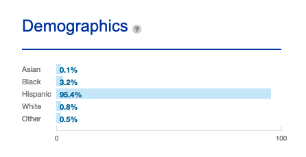
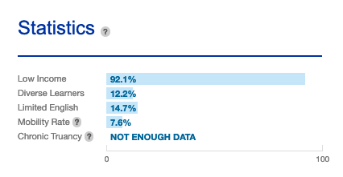

Community
This page has content containing the community. It is about the people who make up the community around Solorio Academy High School.
Who are “they”?
The student population of the school is mostly Hispanic followed by African Americans. Below you will see a picture of the demographics by percentages that has been updated in 2018.
These students come from different backgrounds and mostly do come from low income families. Below will be a picture of the statistics concerning low income, diverse learners, limited English and mobility rate. The mobility rate is just the amount of students that come and go within the school year.
